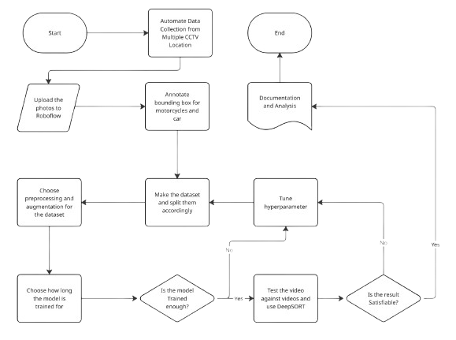
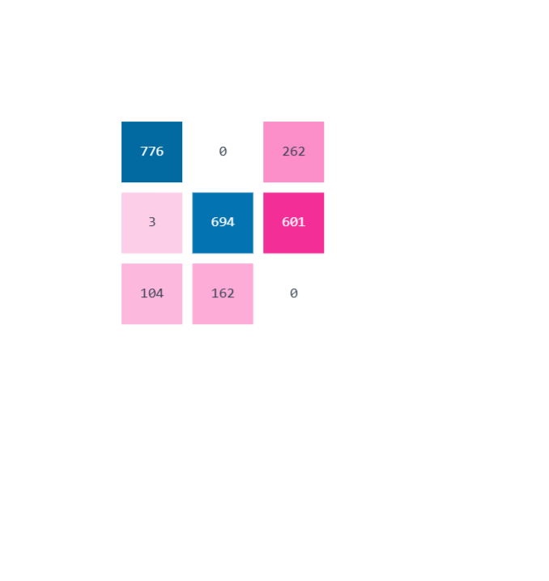

1. Latar Belakang Masalah Nyata di Kota Bandung
Kota Bandung menempati peringkat ke-12 kota termacet di dunia berdasarkan TomTom Traffic Index, dengan pertumbuhan jumlah kendaraan mencapai 9,34% per tahun, jauh melampaui pertumbuhan infrastruktur jalan yang hanya 1,46%. Kecepatan rata-rata kendaraan saat jam sibuk merosot hingga 14,1 km/jam.
Mayoritas model computer vision dan object detection standar industri (seperti model dasar YOLO yang dilatih dengan dataset COCO dari negara-negara Barat) didominasi oleh deteksi mobil berukuran besar. Ketika diterapkan pada lalu lintas kota di Asia Tenggara seperti Bandung, di mana sepeda motor mendominasi lebih dari 60% populasi kendaraan, model standar mengalami kegagalan deteksi:
- Ukuran Piksel Sangat Kecil: Sepeda motor pada rekaman CCTV persimpangan jalan memiliki area piksel 3 hingga 5 kali lebih kecil dibandingkan mobil.
- Oklusi Parah & Manuver Selap-Selip: Formasi sepeda motor yang sangat padat dan saling bertumpuk (clustering) menyebabkan model standar sering melewatkan objek (missed detections) atau menganggap beberapa motor sebagai satu kesatuan.
- Bias Mobil: Model baseline melewatkan hingga 99,2% sepeda motor pada pengujian awal.
2. Pipeline Pengumpulan & Anotasi Data Otomatis
Alih-alih merekam video secara manual yang boros ruang penyimpanan dan memakan waktu, saya merancang skrip otomatisasi Python menggunakan Selenium WebDriver yang melakukan web scraping dan ekstraksi frame langsung dari portal CCTV publik Pemerintah Kota Bandung (Pelindung Bandung):
- 17 Titik CCTV Strategis: Mengakses persimpangan padat seperti SP Buahbatu, Suniaraja, Moh Toha - Sartika Asih, Pasirkoja, SP Telkom Gasibu, SP Tol Pasteur, Jalaprang, dan Antapani.
- Temporal Sampling: Menangkap screenshot frame resolusi tinggi setiap 10 detik selama jendela waktu jam sibuk (11:00 - 14:00 WIB) untuk merepresentasikan variasi pencahayaan dan kepadatan lalu lintas.
- Anotasi Ground-Truth: Sebanyak 1.515 frame dianotasi secara manual menggunakan platform Roboflow selama 1 bulan dengan bounding box presisi.
- Data Augmentation: Menerapkan Horizontal Flip (mengajarkan invarian arah gerak kendaraan) dan Noise Injection / Grain (mensimulasikan noise ISO sensor kamera CCTV kota pada kondisi pencahayaan rendah). Total dataset diperkaya menjadi 3.737 citra dengan 21.277 instans kendaraan (62,5% sepeda motor, 37,5% mobil).

3. Arsitektur Pelacakan & Penghitungan: YOLOv11 + DeepSORT
Deteksi objek dikombinasikan dengan algoritma pelacakan multi-objek (Multi-Object Tracking / MOT) untuk menghitung arus masuk (inflow) dan keluar (outflow) kendaraan:
CCTV Stream Frame (640x640)
↓
YOLOv11 Inference (Confidence: Motor 50%, Mobil 70%)
↓
Deteksi Bounding Box & Titik Sentroid Objek
↓
DeepSORT Tracking (Kalman Filter State Prediction + Appearance Embedding)
├─ Melacak lintasan pergerakan objek dengan ID unik
└─ Max Age: 30 frame | Min Hits: 3 frame
↓
Virtual Counting Line Trigger (Garis Kuning Persimpangan)
├─ Sentroid melintasi garis ke arah masuk ──► Inflow Counter +1
└─ Sentroid melintasi garis ke arah keluar ──► Outflow Counter +1
4. Hasil Evaluasi & Keunggulan Dibanding Baseline
Evaluasi model dihitung menggunakan standar industri COCO Evaluation (Roboflow Verified Model Metrics) pada independent test set (202 citra, 2.336 objek):
| Metrik Evaluasi | Baseline YOLOv11 (Pre-trained COCO) | Model Fine-Tuned Saya (Model A) | Faktor Peningkatan |
|---|---|---|---|
| mAP@50 | 12.1% | 65.5% | 5.4× lebih tinggi |
| Precision | 23.8% | 79.5% | 3.3× pengurangan false alarm |
| Recall Motor | 0.8% (99.2% motor terlewatkan) | 70.0% | 87.5× peningkatan deteksi motor |
Validasi Lapangan pada Video Waktu Nyata (SP Buahbatu):
| Skenario Lalu Lintas | Total Kendaraan Nyata | Akurasi Model Fine-Tuned | Akurasi Baseline COCO |
|---|---|---|---|
| Lalu Lintas Ringan (1 Menit) | 108 kendaraan | 98.1% (Motor: 98.9%, Mobil: 93.7%) | 38.9% (Miss rate motor: 73.9%) |
| Lalu Lintas Sangat Padat (1 Menit) | 271 kendaraan | 85.0% (Motor: 94.9%, Mobil: 84.0%) | 24.0% (Motor anjlok ke 4.0%) |
| Generalisasi Luar Kota (Non-Bandung) | 102 kendaraan | 92.2% (Motor: 90.1%, Mobil: 100%) | 91.2% |

5. Lampiran Sumber Daya & Berkas Penelitian
- Paper Konferensi ICOICT: Unduh Naskah Paper Ilmiah (PDF)
- Google Drive Repository: Folder Berkas Skripsi, Kode Sumber, dan Raw Video Footage
- Video Demonstrasi Deteksi (YouTube):